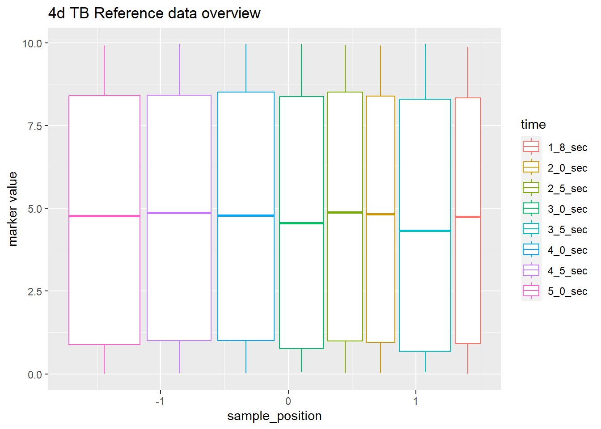
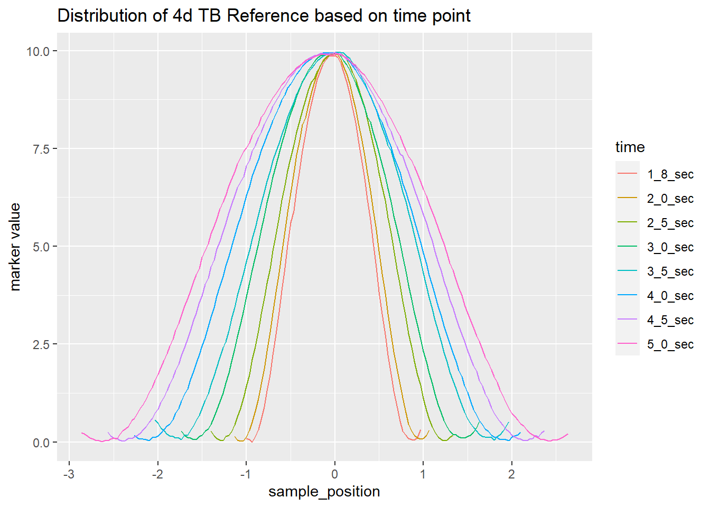

Show the code
library(readxl)
library(janitor)
library(tidyverse)library(readxl)
library(janitor)
library(tidyverse)final_4d_tb_Reference <- read_excel("4d_TB_reference vs treatment timer_SM_for stats.xlsx",
sheet = "4d_TB_reference pattern_Final")
final_4d_tb_Treatment <- read_excel("4d_TB_reference vs treatment timer_SM_for stats.xlsx",
sheet = "FINAL_4d_tb DURING TREATMENT")final_4d_tb_Reference |> clean_names() |> select(sample_position, x5_0_sec:x1_8_sec) |>
pivot_longer(
names_to = "time", values_to = "marker value", x5_0_sec:x1_8_sec) |>
drop_na() |> mutate(time = str_replace_all(time, "x", ""),
type = "4d TB Reference") -> df1df1 |> ggplot(aes(sample_position, `marker value`, col=time)) +
geom_boxplot(outlier.shape = NA) +
labs(title = "4d TB Reference data overview")
df1 |> ggplot(aes(sample_position, `marker value`, col = time)) +
geom_line() +
labs(title = "Distribution of 4d TB Reference based on time point")
In every time point marker values follows the polynomial distribution for more clarity plot separately.
df1 |> ggplot(aes(sample_position, `marker value`, col = type)) +
geom_line() + facet_wrap(~time)final_4d_tb_Treatment |> clean_names() |>
select(sample_position, x2_0_sec:x5_0_sec) |>
pivot_longer(
names_to = "time", values_to = "marker value", x2_0_sec:x5_0_sec) |>
drop_na() |> mutate(time = str_replace_all(time, "x", ""),
type = "6d TB Treatment") -> df2df2 |> ggplot(aes(sample_position, `marker value`, col=time)) +
geom_boxplot(outlier.shape = NA) +
labs(title = "6d TB Reference")df2 |> ggplot(aes(sample_position, `marker value`, col = time)) +
geom_line() +
labs(title = "Distribution of 6d TB Reference based on time point")
In every time point marker values follows the polynomial distribution for more clarity plot separately.
df2 |> ggplot(aes(sample_position, `marker value`, col = type)) +
geom_line() + facet_wrap(~time)newdf <- rbind(df1, df2)
newdf |>
ggplot(aes(sample_position, `marker value`, col = type)) +
geom_line() + facet_wrap(~time)Recoding marker time of this two data sets are not same